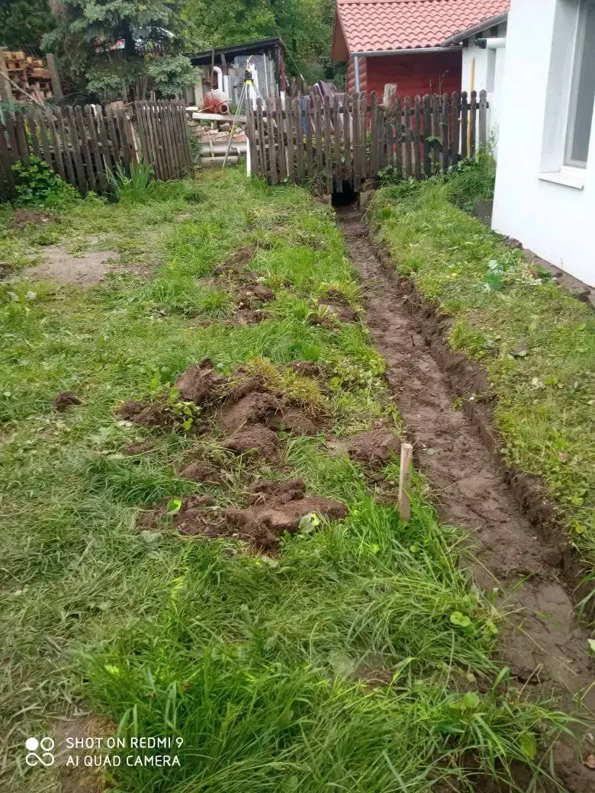
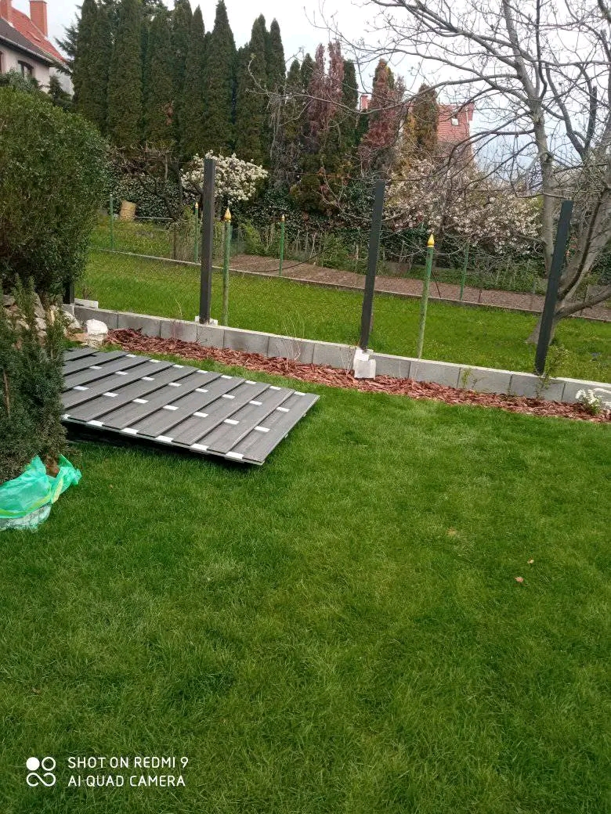

Munkáim Kecskeméten
 Zúzottkő ágyazat, fedett terasz
Zúzottkő ágyazat, fedett terasz Zúzottkő ágyazat háznál
Zúzottkő ágyazat háznál Zúzottkő, szegéllyel
Zúzottkő, szegéllyel
Törmelék, zúzottkő rendezése
Terasz deszkázat előkészítése Barna trapézlemez kerítés
Barna trapézlemez kerítésKecskeméten főleg alapozási és kertépítési munkákat végzek, fedett teraszoktól a teljes kerítésépítésig.
Ingyenes árajánlatot kérekTörmelék és zúzottkő rendezése, tereprendezés Kecskeméten, új és felújítási projekteknél egyaránt.
Zúzottkő ágyazat háznál, szegéllyel vagy fedett terasz alá — ez a legjellemzőbb kecskeméti munkám.
Betonalapok és felületek kivitelezése Kecskeméten, tartós, pontos technológiával.
Teraszok és bejárók térkövezése kecskeméti ingatlanoknál.
Terasz-deszkázat előkészítése, barna trapézlemez kerítés építése — Kecskeméten ez a kertépítési munkáim gyakori formája.
Zúzottkő ágyazat, fedett teraszZúzottkő ágyazat háználZúzottkő, szegéllyel
Törmelék, zúzottkő rendezése
Terasz deszkázat előkészítéseBarna trapézlemez kerítésNincs kötelezettség, 24 órán belül visszahívlak.
Árajánlatot kérek